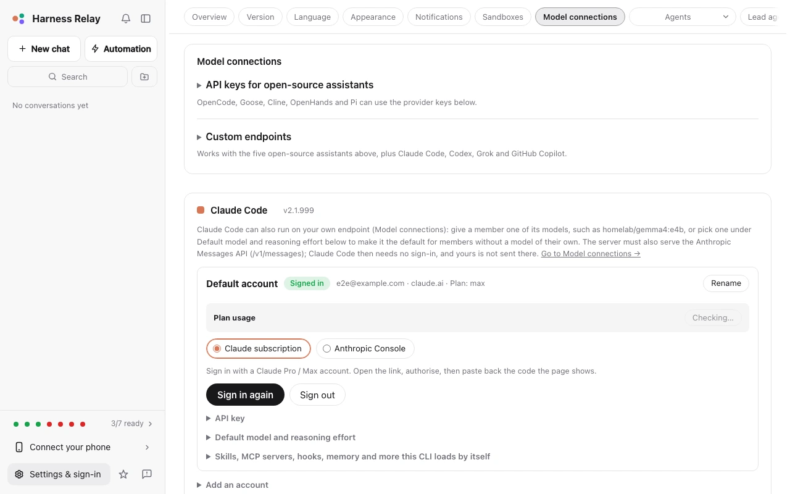
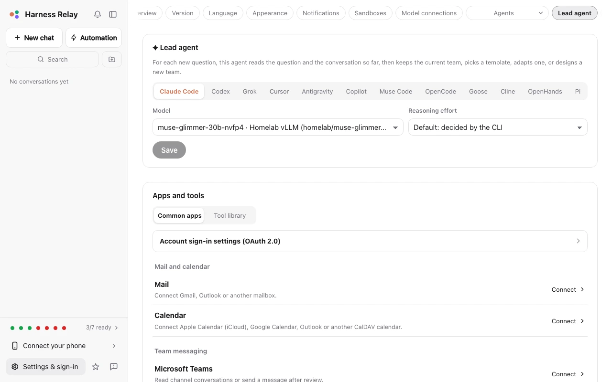

Connect your agents
Harness Relay drives the coding agents you already use, signed in as you are. Sign each one in once under Settings & sign-in, or give the open-source agents an API key or a model server of your own, and they are ready for any team.
Settings & sign-in
Click Settings & sign-in at the foot of the sidebar. The links at the top jump to each part. Model backends comes before the agents, then each agent has a card. A card shows the agent's version, or, when Harness Relay does not find it on your computer, a button that installs it. Each of its accounts has a box of its own, with its sign-in, its API key and its default model.
The dots at the bottom of the sidebar show at a glance which agents are ready:
| Dot | Means |
|---|---|
| Green | Ready to use. |
| Orange | Not signed in yet; for an open-source agent, no model backend yet. |
| Red | The agent's program was not found on this computer. |
Beside them, how many are ready (4/12 ready). Point at a dot to see its agent's name, or click it to open that agent's settings.
Sign in to an agent
On the agent's card, pick a way to sign in and click Sign in. Harness Relay runs the agent's own sign-in and shows you what to do:
| Agent | How to sign in |
|---|---|
| Claude Code | With your Claude subscription or Anthropic Console: open the link, allow it, then paste the code the page shows into the box and click Submit. |
| Codex | With ChatGPT, by a device code: open the link, sign in to ChatGPT and enter the one-time code shown (click it to copy). Or sign in in a browser, which opens on this computer. |
| Grok | With xAI, by a device code or in the browser: open the link and confirm the code. |
| Cursor | With your Cursor account: open the link in a browser on any device, sign in to Cursor and allow it. |
| Antigravity | With your Google account: open the link on any device and sign in to Google, then paste the code the page shows into the box and click Submit. |
| Copilot | With your GitHub account: open github.com/login/device on any device, enter the code shown (click it to copy) and authorize it. |
| Muse Code | With your Meta account: open the link on any device, sign in to your Meta account and check that the page shows the same code. |
The panel turns green with Signed in ✓ when the agent is done. If something goes wrong, open CLI output to see what the agent said. Check again at the top of Settings looks at every agent anew, for example after you signed one in in a terminal.
It is the agent's own sign-in, the same one you use in a terminal. So Sign out signs the agent out on this computer everywhere, and a new Codex sign-in first signs the current Codex account out (the page asks first).
Or use an API key
Instead of signing in, each of the seven takes a key under API key in its account's box. Claude Code's, Codex's, Grok's, Antigravity's and Muse Code's are billed by use, by the agent's maker, rather than counted against a subscription:
- Claude Code: an Anthropic API key. It takes precedence over your Claude subscription.
- Codex: an OpenAI API key. Codex keeps it, and it replaces your ChatGPT sign-in.
- Grok: an xAI API key.
- Cursor: a Cursor API key, for Harness Relay's runs only; your own Cursor sign-in stays as it was.
- Antigravity: a Gemini API key. Antigravity then runs on the Gemini API instead of your Google sign-in.
- Copilot: a fine-grained GitHub token with the “Copilot Requests” permission (classic tokens don't work). It uses that GitHub account's plan.
- Muse Code: a Meta API key.
Harness Relay keeps the other keys in your system's credential store (the macOS Keychain, Windows Credential Manager, or your keyring on Linux), and only ever shows them masked.
Open-source agents and model backends
OpenCode, Goose, Cline, OpenHands and Pi have no sign-in. They run on the model backends you set up under Settings → Model backends, and on nothing else:
- API keys: one each for OpenAI, Anthropic and xAI. Paste it and click Save. Your Claude subscription and Grok sign-in cannot be used here: Anthropic does not allow its subscription in other agents.
-
Custom endpoints: a model server of your own that speaks OpenAI's API, such as vLLM, Ollama, LM Studio or
llama.cpp. Add endpoint asks for a name, a short id (such as
homelab), its address (for Ollama on this computer,http://localhost:11434/v1) and the names of its models, one per line, plus its API key if it needs one.

A member of an open-source agent then gets a model written as backend and name: openai/…,
anthropic/…, xai/…, or your endpoint's id and a model, such as
homelab/muse-glimmer-30b-nvfp4. Its card in Settings says Ready once the agent is installed and at least one
backend is set up.
The other agents on your own server
Claude Code, Codex, Grok and Copilot can run on your custom endpoints too: their model menus list your endpoints' models after their own. Give a member one of them, and that agent works on your server instead of its maker's service. Your server must speak the API that agent uses; vLLM, Ollama, LM Studio and llama.cpp serve them all. Claude Code, Codex and Copilot then need no sign-in; Grok still needs its own. Cursor, Antigravity and Muse Code run on their own services only.
Accounts and plan usage
More than one account
Each agent can be signed in to several accounts at once, such as a work and a personal Claude subscription: open Add an account under the agent's accounts, name it and click Add an account. Each account signs in on its own, and has its own API key and default model. In a team, choose which account each member runs on with Account on its card; a member with none chosen uses the default account. Remove signs an extra account out and deletes it.
Cursor, Antigravity and Muse Code keep their sign-in in one place for your whole computer user, so their extra accounts take an API key instead (a Cursor API key, a Gemini API key, a Meta API key).
Plan usage
Once an account is signed in, its box shows Plan usage: how much of its plan is left, as the agent reports it, with a bar for each limit and when it starts over (Claude Code's 5-hour and weekly limits, say, or Copilot's premium requests this month). Harness Relay asks without sending a prompt, so checking uses nothing up. Check again asks anew. An account on an API key (Claude Code, Codex, Grok, Antigravity, Muse Code) has no plan limits: its provider bills the key by use, so see the balance in the provider's console. Copilot on a GitHub token shows that GitHub account's plan. For Cursor, the box names the plan only, and nothing for an account on a Cursor API key.
Default models and the lead agent
Default model and reasoning effort
Each account's box has Default model and reasoning effort: what its members use when their own model is left on Default. Left on CLI default, the agent uses its own settings, as in a terminal. You can always give a single member another model in the team.
Choose the lead agent
Lead agent in Settings picks the agent, and optionally its model and effort, that designs a team for each question, reviews the team's replies, and sorts new chats into your groups. Choose one that is signed in, or an open-source agent with a model backend. A small, fast model is usually enough.
